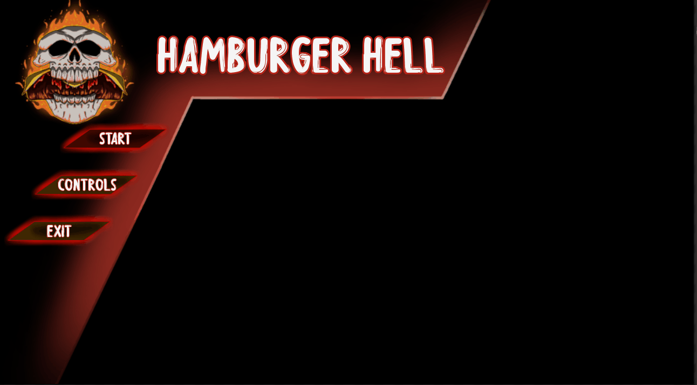

I am a graduate of AIE, i live in lousiana and these are some of the system that i developed for games.

Hambergur Hell
In this game I made the start and restart menu, controller controls for the UI, shooting of the gun and rocket.
Start UI

When making the start UI I wanted the artist to easily put in their assets. I put all of the buttons in their respective containers so I could turn them off visually to change the menu. Each time I go to options I turn off the other menu This made organizing each menu easier and having the ability when, making the menu to turn off what, I was not working on currently. I used console commands to call the other level to start th
Restart UI
The restart menu is a UI overlay that when you die it covers your sreen. By doing this I made the input for the level go to UI only, then game the restart button call the current level using system commands. The start and restart menu when going betwee the options on the menu work the same way.

Shooting

Shooting is one of the main forms of damage. When you hold the main fire bullet(left click/right lower bumper) you can automatically shoot. And just in case you got a rocket on your right click/ left lower bumper that destroys every thing in your way.
Bullet
The gun is split into 3 parts. The crank, the back blast, and the bullet coming out of the barrel. The back blast of the gun makes a bool that was set in the player to true. Then the function to spawn the bullet is called. In the player I allowed the function to print bullets in tick to have auto fire happen.
Missle

The missile is an area effect damage that on impact with a wall or enemy will explode. On collision, the mesh for the rocket is disabled for visibility and I increase its size by 30 unity in each direction. By doing this I was able to keep the rocket simple and easy to understand. I only wanted a small amount in Blurprint and I needed to add particles and sound calls in Blurprint to make it spawn them.